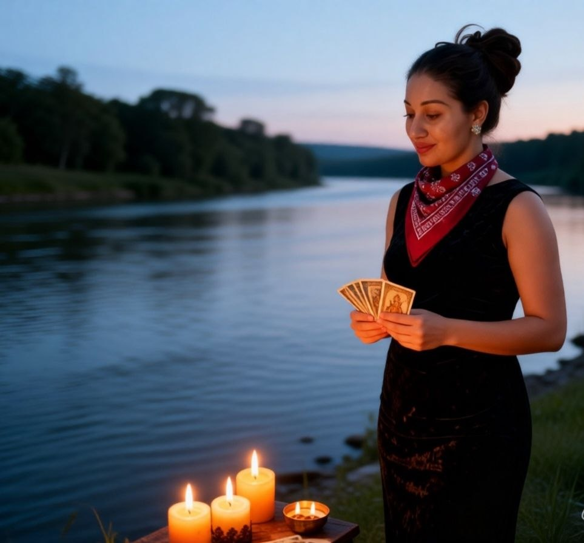
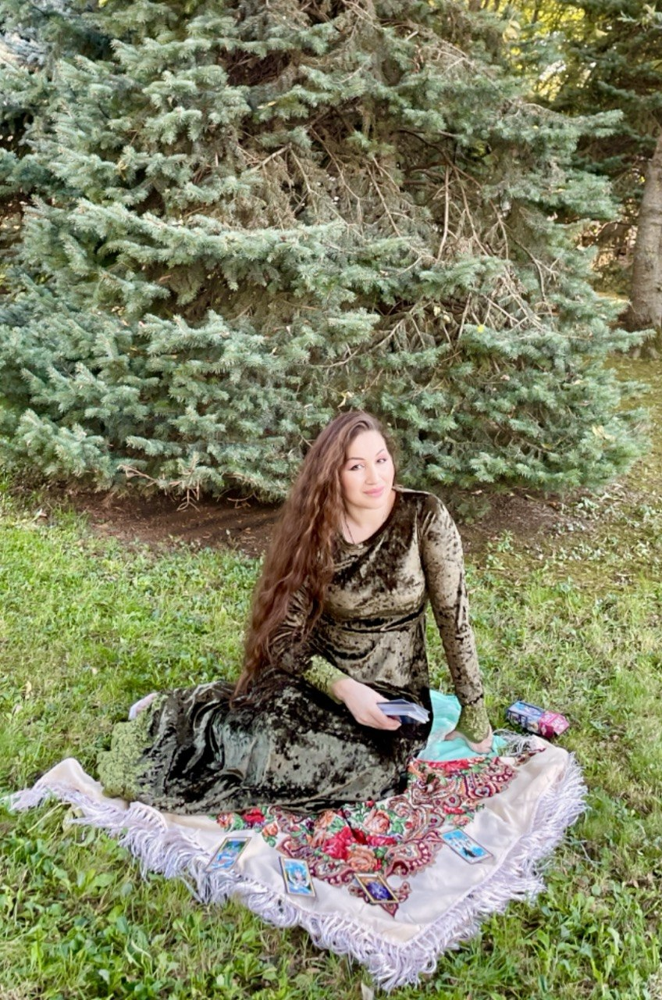
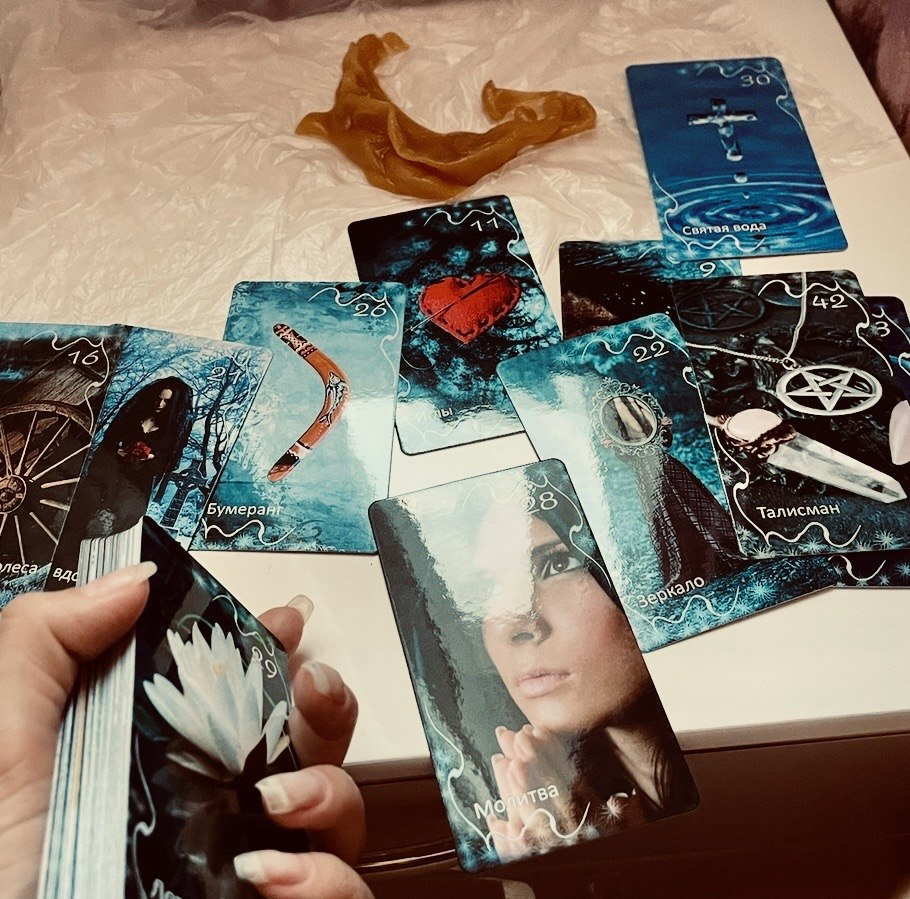
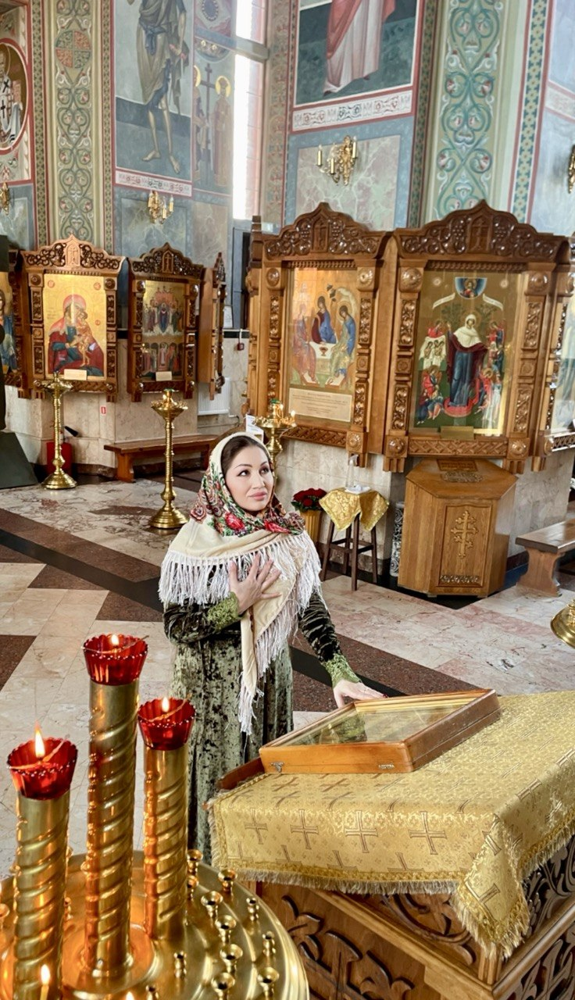
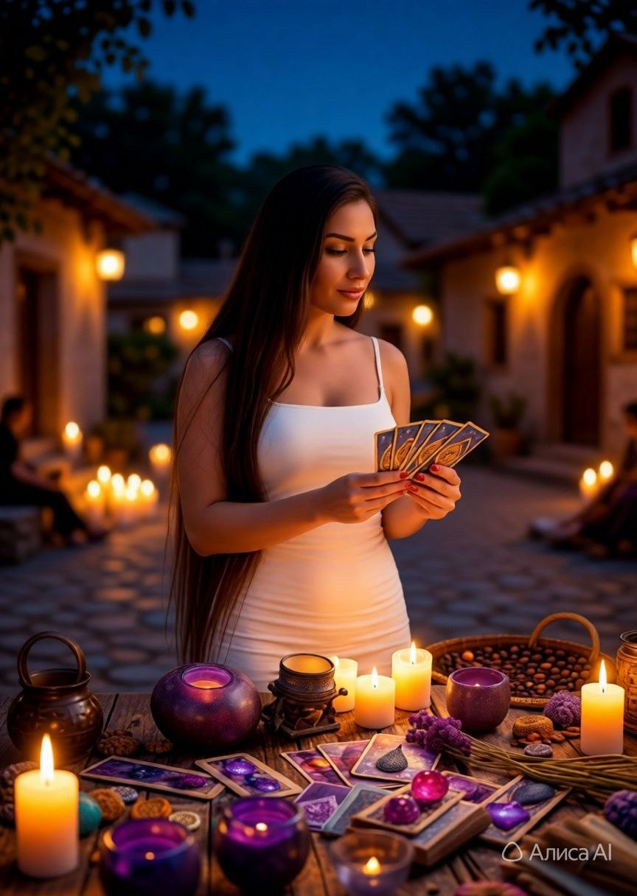

Я не стану говорить, что я маг в сто десятом поколении! Ко мне обращаются люди, не первый год работаю, не фантазирую, не пугаю — всё по факту!
Смотрю на Таро, Оракулах, обычных игральных картах, а также делаю отливки Воском и Свинцом. Предоставляю Фото и Видео отчёт!
Я никогда не работаю «вслепую» — сначала важно понять, что именно происходит в Вашей жизни, какие энергии задействованы и какие пути решения открыты.


Для диагностики нужно прислать:
В Диагностике я смотрю:
Если в вашей жизни появились внезапные конфликты, упадок сил, финансовые потери или рушатся отношения — нужно проверять энергетику.
Диагностика даёт понять, где корень проблемы! Если вижу негатив, работа идет в два этапа: ОЧИЩЕНИЕ И ЗАЩИТА (Воск, Свинец, Отжиги).


Подход к ситуации ювелирный, и выход всегда есть!
Если заработок даётся с трудом, деньги не удерживаются, а сделки срываются — причиной может быть заблокированный денежный канал.
Чистка Чакр и Отжиги позволяют устранить застой и привлечь ресурсы!